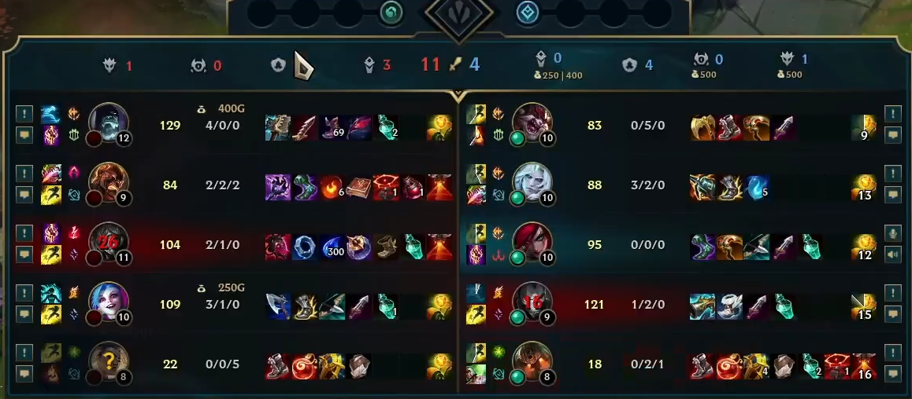

- ＬＯＬ日記１
- プレイ動画
- キャラ
- アーリの個人的感想
- アーリの活かし方・活かせない理由
- カタリナ
- カタリナのトレンドの移り変わり
- まとめ
- アーリの活かし方・活かせない理由
- カタリナ
- カタリナのトレンドの移り変わり
- まとめ
- アーリの活かし方・活かせない理由
LOL日記1
LOL
暴言が飛び交う闇のゲームであるＬＯＬの上達目指す過程を書いていきます。

キャラ
キャラの経歴としては朧げで大体だが、ラックス３０戦⇒アーリ５０戦⇒フィズ１００戦⇒リリア５０戦⇒カタリナ１５０戦⇒ＴＦ３０戦⇒アーリ１００戦⇒カタリナ５０戦
※１ １０戦以下は記述してません。
※２ サブロール時はJGサポだったりBANでもちろんメインキャラ以外は出すこともあります。
最近はアーリがOPから少し弱くなってカタリナを使うことが多いです。
カタリナは自分が始めたころから少し前まで６～１０位くらいをキープしてました。
強すぎないから弱体化こなくて環境がすぐ変わるＬＯＬにおいていい位置のキャラだと思い練習し始めたキャラでした。
他にはアニビアも同じポジションだと思っています。
ですがカタリナは最近２０位に落ち、アニビアは１０以内を維持してます。
こんな状況で４位くらいのアーリではなくカタリナを使う理由を初心者なりに言語化していこうと思います。
アーリの個人的感想

アーリを使って思ったのが、偉いキャラだということです。
ロームが強くて、ＣＣあって、レーン戦強い
逆にデメリットを上げるなら、パワースパイクが序盤中盤なので長引くと育っててもどうにもできなくなる。
瞬間火力が低い
アーリの活かし方・活かせない理由
これらを踏まえると、アーリが勝つためには序盤中盤でロームでしっかりリードを奪う
敵のジャングルの視界を取ってＪＧを襲いに行ったりなどが必要だと感じました。
だが、私が下手なのもありロームの回数が少なかったりします。
特に大事なのが有利をいかすのが下手ということです。
更に、ランク帯が低いので屈託ない意見を言うなら周りも下手のはずです。
つまり皆試合を綺麗に畳むのが下手なわけです。
ということは、試合が長引きます。
そうなると低ランク帯ではアーリが輝きづらいとやってる内に思いました。
俺が強くなったら壊せるみたいなキャラが分かりやすく強いと思います。
カタリナ

カタリナは俺が全て壊すってキャラではないです。
ですが集団戦における後入りで奥に飛び込んでADCを破壊できます。
アーリより瞬間火力が出せるので終盤になってもADCやサポ、メイジ系を破壊したりできます。
アサシンの良いところです。
アサシンで全て破壊できるヨネがいるのですが、ヨネはキャラtierが昨今低いし、練度を優先して採用しました。
カタリナのトレンドの移り変わり
OPGGを見てるとＡＤカタリナが最近のトレンドのようです。
最近はずっとＡＰがトレンドだったので、私は初のADでしたが王剣が気持ちよくて楽しかったです。
問題点としては、ＡＤカタリナ出したいけどＪＧのＡＰキャラが余り当たらないことです。
ですが、やってみたかったので王剣買うしいいか精神で脳死ＡＤでやってます。
まとめ
理想を言うなら破壊できる系のキャラなのですが、練度を優先しつつ
アーリのデメリットを多少解消できるキャラがカタリナだったわけです。
今回は、残念ながらプレイ動画はなしですが次回がプレイ動画を録ってきて反省をしていきたいと思います。
お楽しみに～！！！
LoL日記2
プレイ動画
キャラピックの時に考えてたこと
キャラピックは上記の理由で魂のカタリナ
編成を見ていくと、ミッドもメイジでJGもメイジでカタリナはぶっ刺さってる
ヨリックはきついが、トップが育つとカタリナやアーリみたいな系統では止めれんくなるのでそもそも論
更にヨリックはグールを使う関係上レーン戦が強いキャラです。
なので集団戦でカタリナで裏を壊して勝つのが勝ち筋なのかなと、少ーしだけ考えてました。
開幕
こちらはフックがあるので当たりあいを狙いました。
ですが敵も間抜けではないので、しっかり引いてトップ側ジャングルに圧をかけられました。
最近当たりあいを狙う意味について考えさせられることが多いです。
エンゲージするのは敵がしっかり引くと難しく、視界の交換で終わるならＪＧのピック次第で帰るべきなのかなと思ってきました。
反省点１ 7:10
もはや何があった？？？？
久しぶりだし体力負けしてたのはいいです。しょうがない
ただこのトレードはほんとによくないです。死にかけてて危ないです。
更に、こんな序盤に帰りたくないという感情で中途半端に残って粘ってるのが非常に良くなかったです。
反省点２ 9:00
相手のQを見てトレード判断は非常にグッドプレーでした。
しかし、トレードが終わった後に体力２倍くらい差があるのに後ろの方でCS専念してたのがもったいなかったです。
もっと前に出てキルプレッシャーをかけるべきでした。
反省点３ 10:10
Ｑを避けてその上Ｅまでラッキーで避けてトレード開始。
ここだけ見れば完璧もいいとこであるが問題はここからである。
ＱとＷのナイフを同時拾ってしまい片方当たってない挙句＆アーリにEが当たっていないのである。
更に、咄嗟にＣＯＮＴＲＯＬ＋Ｒを押せずにクリックでスキル習得、その結果ウルトがないも同然くらいのダメしか出せない。
アーリＱは戻ってくると気が一番痛いのに動揺でウルト解除せずに被弾。
ここまででも大失態だが、まだまだミスは止まらない。
アーリが６になってるのに気づいてないのである。
体力がローなのでアーリのＲ追尾弾＋Ｗ＋ＡＡで普通に死ぬ体力です。
ＲからのＥをフラッシュで避け
フラシュ対策に１ブリンクでＥを吐かない展開もあったのでしっかり使ったの見てからフラッシュ押せたのは良かったところです。
（もしも、１ブリンクでＥ吐かなかったら、アーリが真後ろにいるくらいの距離感なので見てからは厳しいのでフラッシュを２ブリンクと同時に即座に吐くことになったでしょう。）
そして、Ｗで加速しＥで逃げれたが、これは結果論だ。
危なかったなんてもんじゃない！あれは相手の甘さに助けられた形です。
本当なら間違いなく死んでいたので反省です。
反省点4 12:40
Ｑを見てからトレード開始がしっかりできてるのはグッド。
Ｅがまだ一回もレベル上がってない関係で、リキャが帰ってこず一瞬下がってＥで飛びつこうと当時考えてたと思うんですが、
カーソルをよく見てもらえば分かるのですが、0.2秒くらい帰ってる来るときにはナイフ落下場所にカーソル合わせてるのですが、
なぜかその後引くことを選択してるんですよね。
ここは飛びつくことによって深く潜れて、そこからウルトでかなり有利なトレードにできたはずでした。
13:20くらいまでに色々あったのでそっちも一緒に反省していく。
ＣＳもついでに取れるのでとりあえず仕掛けました。
飛びついた後歩き回ってるのはチャームが飛んでくると思ってずらしにいきました。
その後、来ないなんてわけないと思ってたので慌てて追いかけてしまったのは反省です。
なぜならＱの弾が戻ってきてるからです。
当時は、Ｑに被弾する前にナイフ拾ってリキャ短縮してＥで避けるつもりだったと思うのですが
結果的にはリキャ短縮してもＥは帰ってこずに手痛い攻撃に被弾しただけの形になりました。
その後のチャームを避けれたのはさすがにまぐれです。
チャーム避けたうえ深く入れたのでカタリナＲでダメを稼ぎに行くと、たまらずアーリＲで逃げられました。
アーリとしては２ブリンク余ってるので活用したいと思い、体力は圧倒的に有利なので逆に殺せないかなと思い２ブリ吐かないとエンゲージできない距離を維持。
ここで敵のレルが消えた報告が来てヴィエゴが寄ってきてるのもＶＣで把握してました。
とりあえず、脳死で上に寄ってから頭を回そうとしましたが、ここで甘えて近づきすぎてアーリのエンゲージ。
アーリが１ブリをミスってくれたのでブリンク無しＱＷＲ無しの状態で突っ込んで来る超有利な形になったので、逃げ用に吐いたＷのナイフに速攻Ｅ
クリック位置が甘くてアーリの後ろに飛べずチャーム被弾したところでレルがヴィエゴより先に到着
Ｅで飛びついてもダメが足りなさそうだったので断念して撤退したが、ヴィェゴが寄ってたのでレルに負けることはないだろうし
今考えると、飛び込んでもよかったかもしれない。
反省点５ 14:20
ヴィェゴとブランドが接敵、アーリにプレッシャーを掛けながら寄る。
これでブランドはまず間違いなくやれるだろうなと思っていた。
なのでアーリのＱをしっかり避ける。（ここで無視してＥはタワーぎりだったので怖かった）
ここで少し怖かったがＱは吐かせたのでエンゲージ。
ダメが足りずにナイフを拾いに向かうのだが、フラッシュで逃げられるかもと思い焦りずきて拾う前に方向を変えてしまう。
フラッシュ対策に最速で方向転換したかったのが早すぎたのである。
更に、ここでピッタリＲが帰ってくるがナイフを拾い損ねた動揺で気づかない。
ここでＲを押せていればフラッシュまで吐かせたうえで殺せてた。
14:20より前から、相手がローなのに強気で殺せそうな展開だったのに弱気になって結局殺せないまま帰られるというもったいない展開で終わってしまった。
反省点６ 18:00
ノーチがフックを当てたので慌てて寄るというきつい形のスタートになってしまった。
大慌てで飛び込んだ結果、タワーダイブ判定を食らい、その上Ｒをスタンで止められてしまいました。
更にそれによってタワーの攻撃を２発被弾という大事故に発展。
逃げてるとブリンクが見えてたので硬直してほしいからスキル撃ってくれないかなと思いながら、お祈りフラッシュ
ぎっりぎりで撤退できたが仲間が取り残される形に･･･その上今更出す撤退ピン
この試合で一番のやらかしかもしれない。
反省点７ 20:40

アーリを殺したすぐ後のリザルト、残念ながらブリンクが間に合わずカタリナにはアシストは乗りませんでした。
この画像の何が反省点だったかというと、ここから勝つために必要なことを考えずにプレイしたことです。
ここから先は、勝つために必要なことを考えてないプレイングが続きます。
もちろん、このリザルトの時点で試合は厳しいと言って差し支えないかもしれません。
しかし、だからといって降参するならまだしもプレイ続行なら勝つためのプレイングを追わなかった理由にはなりません。
もっと考え、しっかり視界を広く持っていれば勝てた可能性が十分ありました。
反省点８ 25:30
相手の超甘えバロンを咎められなかったシーンです。
ヴィェゴからVCで視界取れてるからスティールを狙う報告がきました。
なのでプッシュしていたのですが、味方トップがカタリナ寄ってないのに飛び込んでしまいました。
今、思えばバロンデバフありますし最速でテレポで寄ってファイトチャレンジでもよかったなと思いました
テレポするときも間に合わんそうだしバロン横テレポ死ぬかなとか考えています。
実際は今回テレポしたワードが置いてあったのですがマップしか見てなかったので味方アイコンに被ってて存在に気づいてませんでした。
テレポをして飛び込んで数枚キルを狙ってみたのですが、無事死亡。
全員で息を合わせてファイトすれば勝てそうだったので、相手の甘えたバロン触りでした。
これに負けたのは悔しい限りです。
まとめ
全体的に反省が多かったですが、レーン戦が特に反省ですね。
言葉を選ばずに言うなら、相手のアーリは上手くなかったのでもっと徹底的にしゃぶって大差を付けたかったです。
始めにミスばっかでボコボコにされてしまって弱気になってしまったのがよくなかったです。
保守的にやれば今回の仲間トップのように大差を付けられて試合が終わることはないでしょう。
しかし、アーリのあのオーバーピークの数々を見逃し、キルを逃していい理由にはなりません。
始めたばかりで最底辺のランクですので、メンタルをしっかり保ち、しっかり常に考えていけばの知識量の差でミクロ、マクロ共に勝てるはずです。
盤面を支配できるミッドレーナ目指して頑張っていきます！！！